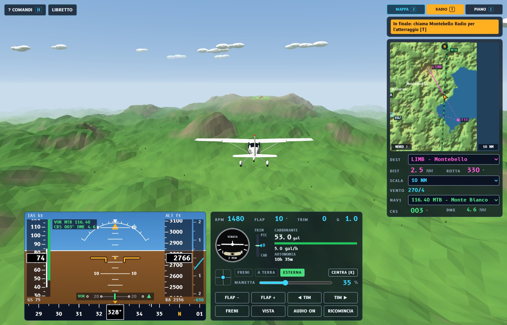

Fisica del volo
Come si fa volare un aereo dentro un computer: la teoria, le formule e i numeri del simulatore Volo.

Di che cosa parla
Volo è un simulatore di volo libero e gratuito, scritto in JavaScript, che si gioca nel browser: un Cessna 172 con il cruscotto G1000 (e un ultraleggero Ikarus C42) sopra il Piemonte vero, con il rilievo, gli aeroporti, le radio e l'autopilota. Queste pagine non spiegano come si gioca, ma perché l'aereo si muove così: quali leggi della fisica ci sono dentro, con quali formule, quali numeri e quali semplificazioni.
Ogni capitolo parte dai principi (quelli dei libri di meccanica del volo), arriva alle formule usate davvero dal programma e mostra le righe di codice corrispondenti. Molti capitoli hanno un laboratorio interattivo: si muovono i cursori e si vede che cosa cambia.
Agli studenti e agli insegnanti degli istituti tecnici, in particolare dell'indirizzo Trasporti e logistica (Costruzioni aeronautiche, Conduzione del mezzo aereo), ma anche di meccanica, elettronica e informatica. Bastano trigonometria, vettori e un'idea di derivata; gli argomenti più avanzati (equazioni di Eulero, quaternioni, integrazione numerica) sono spiegati passo per passo, con esempi numerici.
I capitoli
Come usarlo in classe
- Teoria → verifica: si studia un fenomeno (per esempio la velocità di stallo), si fa il calcolo con i dati del Cessna, poi lo si prova nel simulatore e si confronta.
- Esercizi “Prova tu”: in ogni capitolo, con la soluzione nascosta.
- Modificare il modello: i parametri dell'aereo stanno in un file di testo (
dati/c172.jsnel simulatore). Si può cambiare un coefficiente, ricaricare la pagina e sentire la differenza in volo: un ottimo esercizio di laboratorio. - Leggere il codice: il riquadro verde “Nel simulatore” di ogni capitolo indica le righe del programma che fanno quel calcolo.
Il simulatore usa un modello a coefficienti: buono per capire e per volare in modo realistico, ma semplificato (aria senza turbolenza, elica descritta da una formula, niente deformazioni della struttura). Dove la realtà è diversa, il testo lo dice. Non è materiale per l'addestramento al volo.
Il simulatore
Si gioca da massimilianopetra.github.io/flightsimulator; come si usa (comandi, strumenti, decollo, atterraggio, radio) è spiegato nel manuale del gioco. Il codice sorgente (licenza GPL) è su GitHub. Funziona su un normale PC, anche senza installare nulla.